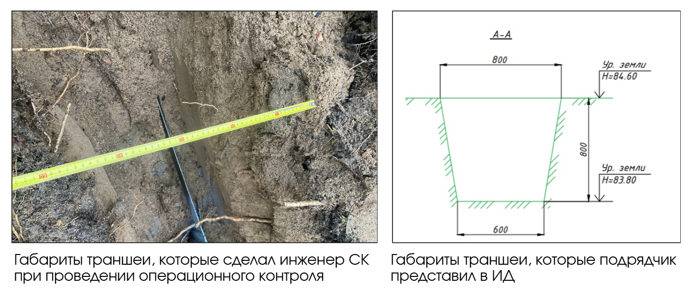

Фотофиксация работ

На этом уроке мы рассмотрим необходимость фотофиксации работ: какие работы можно определить по фото и как проводить фиксацию для максимальной точности и достоверности проведенных работ.
На любом строительном объекте ежедневно выполняется большое количество технологических операций. Инженер строительного контроля проводит входной, операционный и приемочный контроль – это большое количество информации, которое необходимо фиксировать, и лучше всего это делать фотофиксацией.
Фотографировать на объекте важно все: от общего плана до мелких деталей конструкций и наименований материалов и их складирования
Для проведения фотофиксации есть множество программ, на них можно выставить дату проведения работ, время, место (координаты и адрес).
Примером такой программы является timestampcamera. В ней есть функция редактирования штампа, а также выбора другой информации, которая будет присутствовать на фото.

Зачем нужно фиксировать информацию на снимке
Дата снимка. Она необходима для дальнейшей проверки ИД, журнала общих работ, а также контроля периода выполнения технологических операций.
Пример
Представьте, у вас зафиксировано, что бетон был залит 1 марта 2025 года. Подрядчик оформил извещение, что собирается снимать опалубку и проводить следующий вид работ.
Вызов представителя СК оформлен на 3 марта 2025 года.
Но cогласно СП 70, разборку опалубки можно производить только при наборе прочности бетона 70% от номинального значения. У нас имеется фиксация даты заливки. Маловероятно, что ж\б конструкция наберет прочность за 3 дня в весенний период. СК может выехать на объект и проверить конструкцию неразрушающим методом и на этом основании запретить работы до необходимого набора прочности. Также фиксация даты поможет при проверке КС-2 с коэффициентом зимнего удорожания, у вас всегда сохранятся доказательства выполнения работ вне периода, когда будет применяться данный коэффициент.
Место (адрес и координаты). Особенно удобно для линейных объектов, так как вам могут предъявить участок работ, а в дальнейшем доделать другой без вызова представителя СК. У вас останется фиксация принятого участка с координатами и адресом и при проверке вы увидите, какой именно участок принимали, а какой вам не был предъявлен. Также при изменении глубин и ширин траншей у вас останутся доказательства производства работ в параметрах и габаритах на тех участках, которые впоследствии могут отличаться от представленных в ИД.
Ниже смотрите пример габаритов траншеи, которые сделала я при проведении операционного контроля, и пример габаритов, которые представил подрядчик в ИД.

На фото мы видим несоответствие схемы ИД и факта выполненных работ.
Дополнительные подписи. Можно настроить дополнительные подписи на фото: это может быть нумерация этажей, названия корпусов или наименование осей. Вы сами вносите данные, которые хотите отразить на снимке.
Что можно определить по фото
По снимку можно определить габариты конструктивных элементов. Для наглядного примера рассмотрим фото, по которому мы сможем определить несколько данных.

Я составила для вас шесть основных пунктов, как сделать максимально информативные фото:
- Фото общего плана, на котором будет виден весь объект контроля. Делать его нужно с двух противоположных точек.
- Фото объекта контроля. Делаем с двух противоположных точек. Так можно рассчитать количество сварных соединений, количество отводов, арматуры, подвесов, уплотнений, и многих других видов работ.
- Детальное фото мест примыканий, мест соприкосновения конструкции с землей (если ж/б конструкция будет соприкасаться с землей, то в таком случае должна быть выполнена гидроизоляция)
- Несколько фото с рулеткой. Зная конструктивные элементы нескольких деталей, можно вычислить габариты всех необходимых элементов.
- Фото наименований и маркировок материала.
- При армировании делаем фото общего плана с такого ракурса, чтобы было возможно детально рассмотреть пространственные элементы и рассчитать количество фиксаторов. Обращаем внимание на толщину защитного слоя. Также фото с нескольких ракурсов.
Теперь перейдем к видео, в котором я показала, как использовать мобильное приложение для качественной фотофиксации работ.
Теперь вы понимаете, как максимально подробно и информативно зафиксировать работы с помощью фото. Осталось только закрепить знания в интерактивном тренажере.
Предисловие к заданию. Часто возникают ситуации, когда инженер СК не может приехать на приемку выполненных работ или пропускает какой-либо замер. В таком случае он просит, чтобы ему прислали фотоотчет.
Задание. Посмотрите на представленные фото работ и определите, какие из них нельзя подтвердить.
Мы с вами выяснили, что фотофиксация – важный этап в работе строительного контроля. Не пренебрегайте этими правилами. Очень часто именно доказательства на фото помогали СК избегать неприятностей.